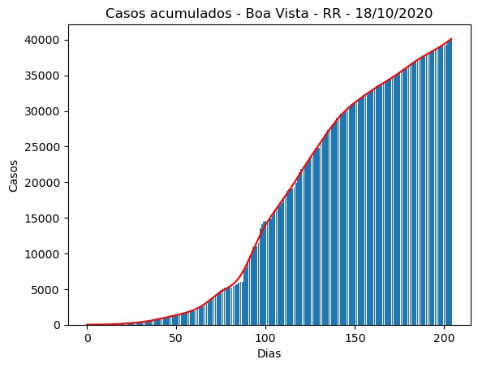
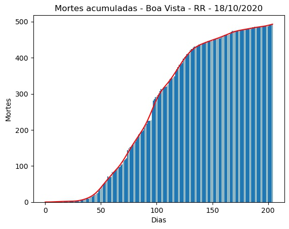
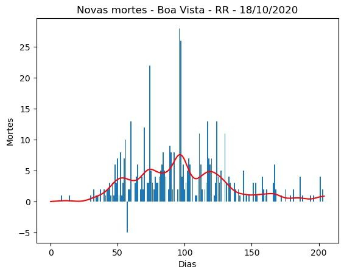
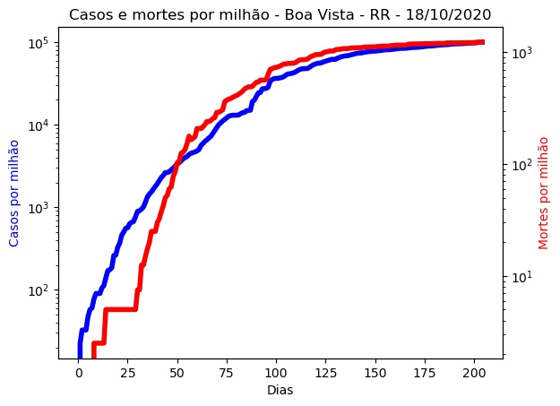
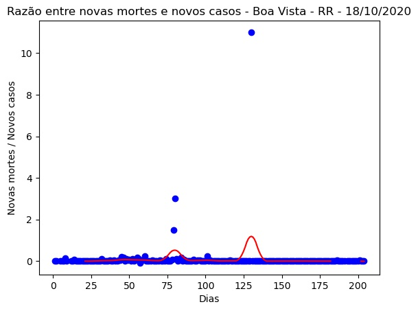
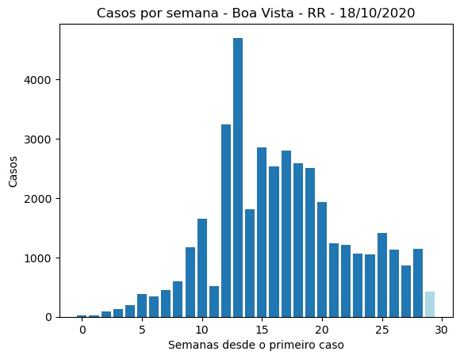
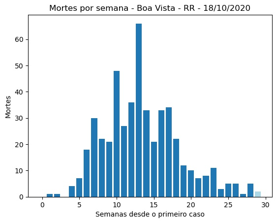
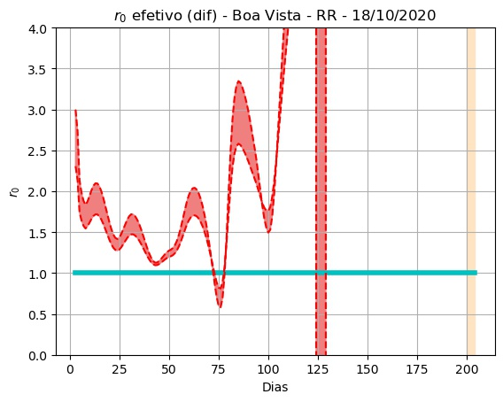
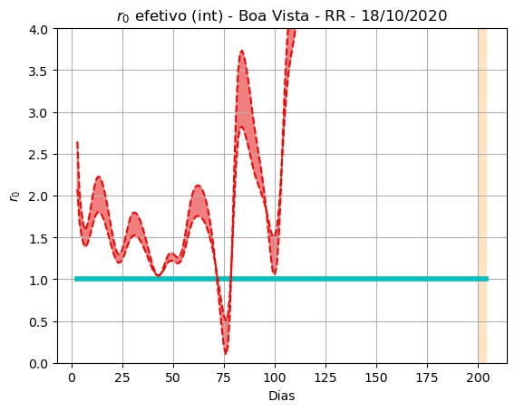
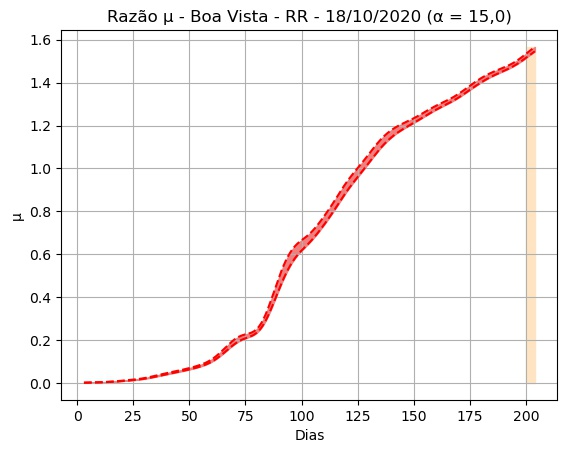

Boa Vista - RR - 18/10/2020.
Detalhes técnicos, aqui. Clique aqui para uma versão em PDF desta análise.
População: 399.213.
Início e fim da série: 2020-03-27 e 2020-10-17. (205 elementos - 29 semanas e 2 dias).
Número de casos totais e mortes: 40.092 e 493. (100.428 e 1.235 por milhão de habitantes, respectivamente.)
r0 (integral) efetivo médio (duas últimas semanas - três dias de atraso): -2,21 (std = 0,36).
Último intervalo para r0 (três dias de atraso): (-2,52 : -2,37).
Limiar imunidade de grupo nR (baseado no valor de r0 (integral) efetivo médio) = 1,45.
Previsão do número total de casos para os próximos 5 dias: 40.251, 40.410, 40.570, 40.729, 40.889.
 


 
 
 
